Attribute Prototype-Based Similarity Measure

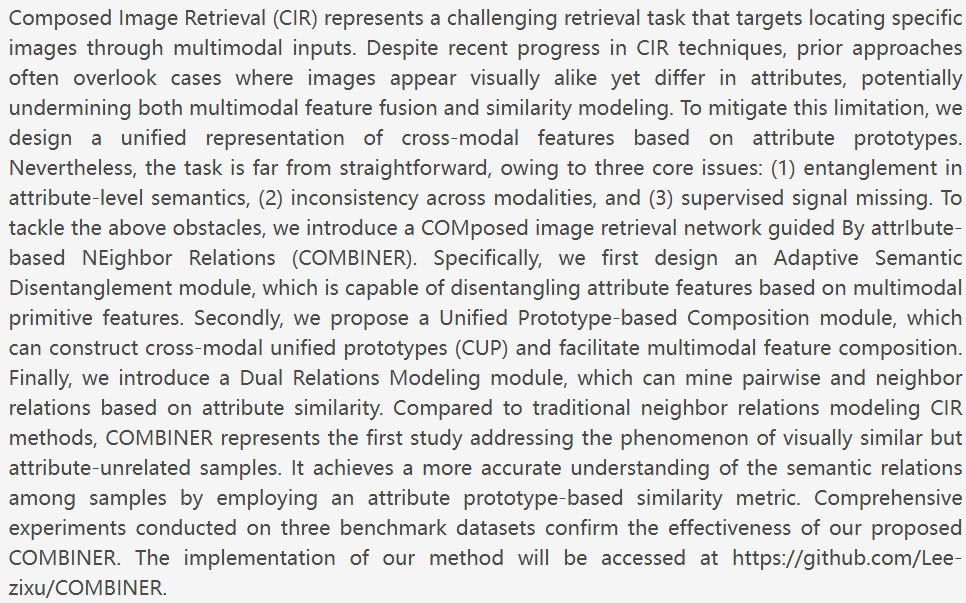
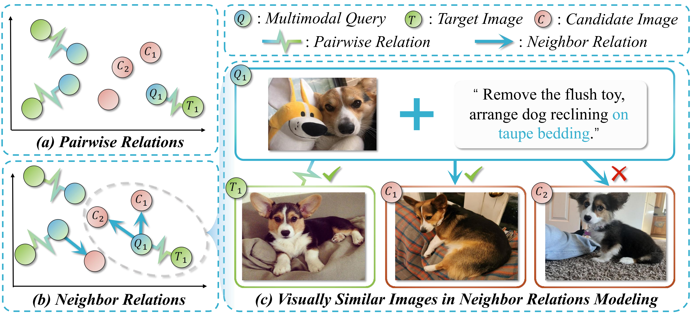
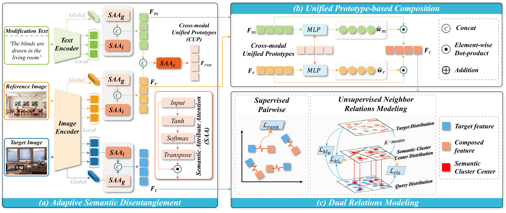
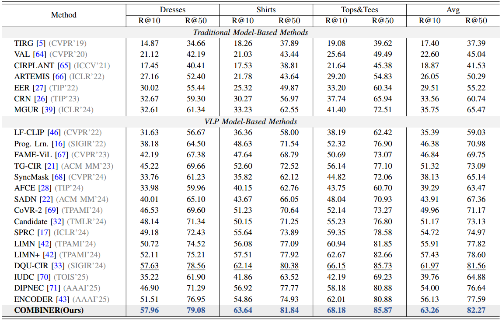
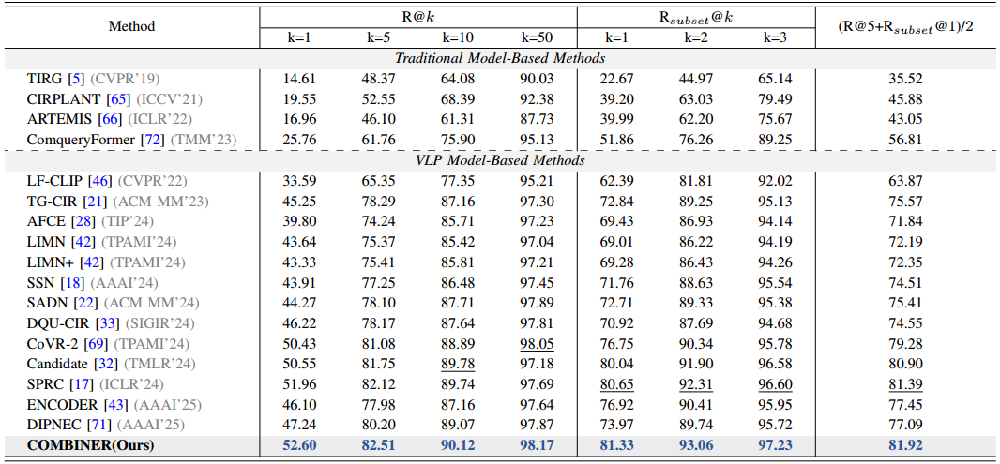
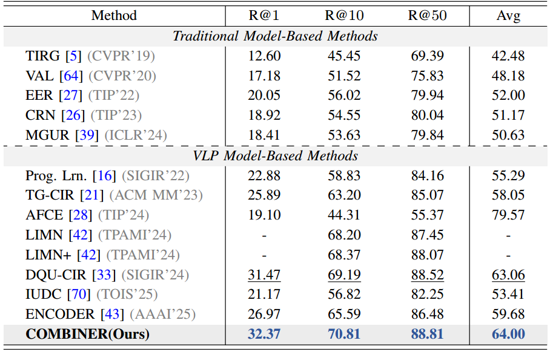
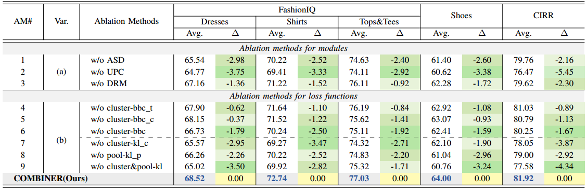
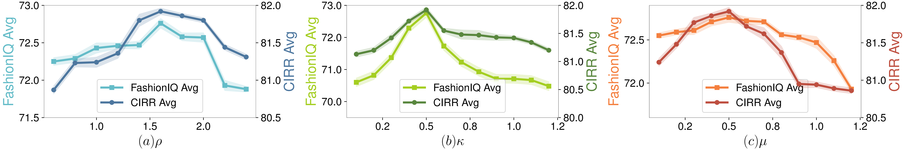
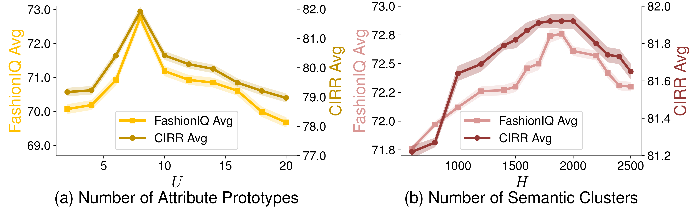
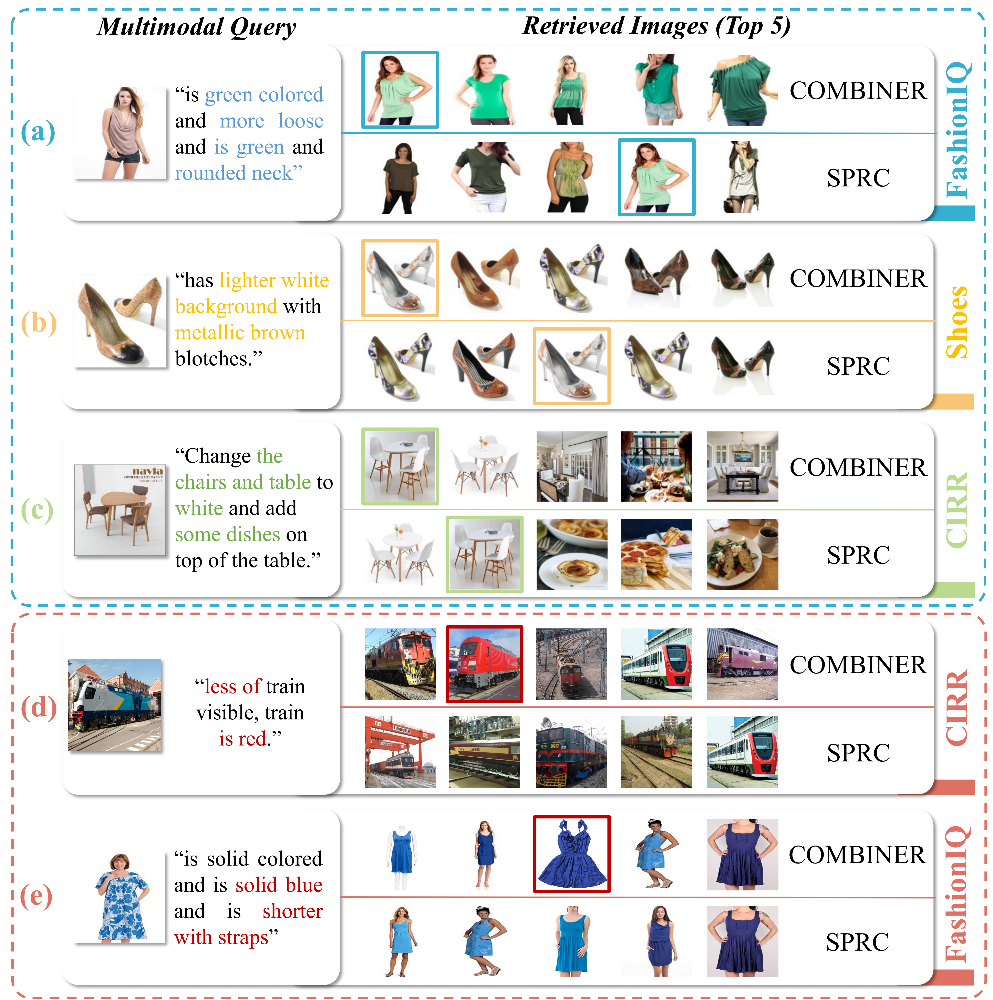
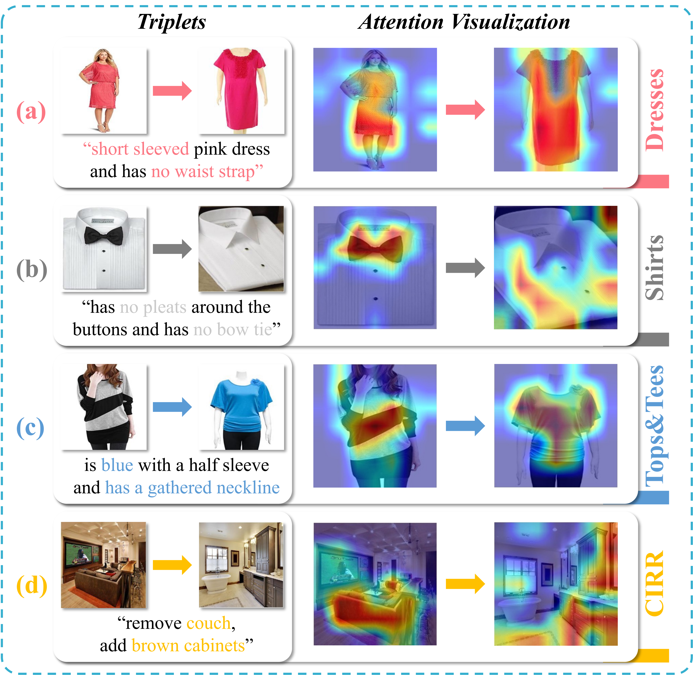
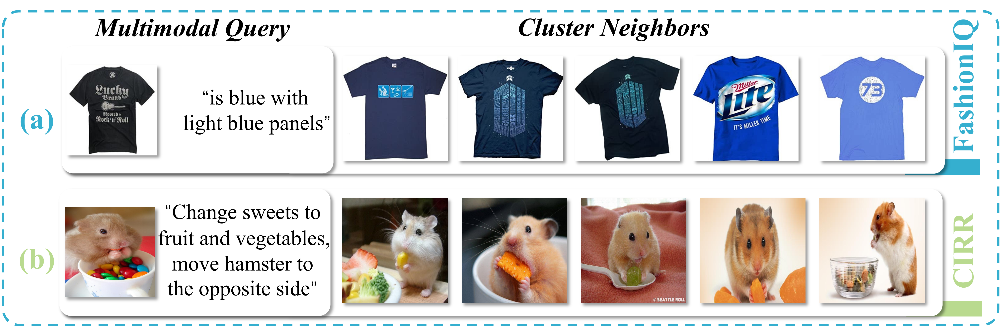
@article{COMBINER,
title={COMBINER: Composed Image Retrieval Guided by Attribute-based Neighbor Relations},
author={Li, Zixu and Hu, Yupeng and Chen, Zhiwei and Wen, Haokun and Song, Xuemeng and Nie, Liqiang},
journal={IEEE Transactions on Image Processing},
year={2026},
publisher={IEEE}
}